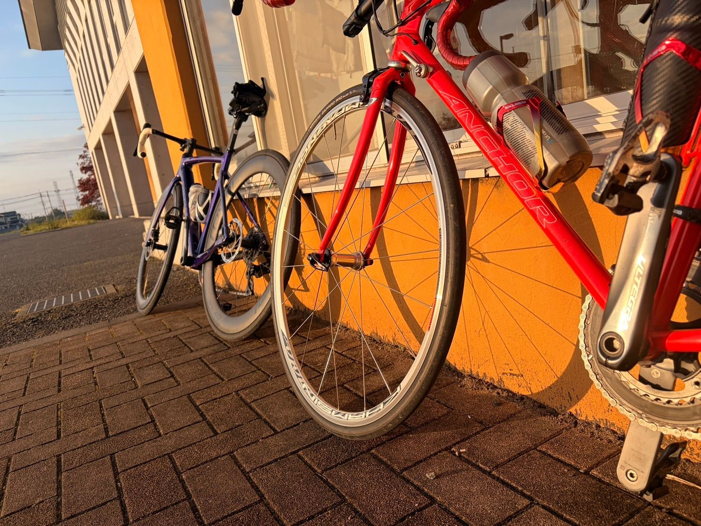
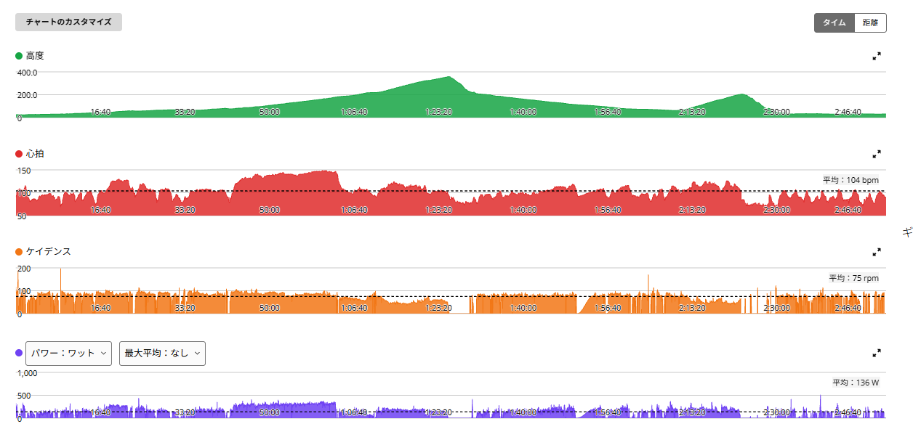
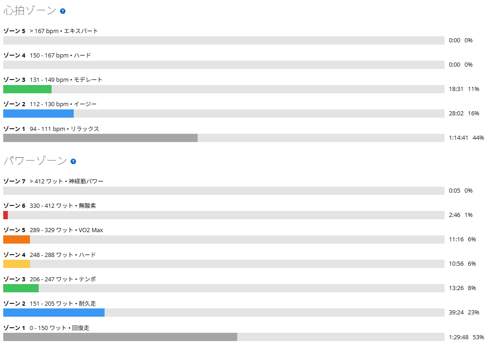

近沢ライド。20分だけ頑張って、あとはベース練習
今日は近沢方面へ。前日にローラーでSSTをやっているので、最初から全部を高強度にするつもりはなかった。全体としては「20分だけ頑張って、あとはベース練習」という感じで走った。バイクはAethos2がパンク中なので、今日もANCHOR RNC7。今後、このコースは「近沢ライド」として記録していく。

約61km・NP194W・TSS139
- 全体60.92km / 2時間47分43秒（経過3時間21分00秒）/ 獲得515m / 平均気温13.8℃
- 負荷平均136W / NP194W / IF0.706 / TSS138.6
- 心拍・回転平均104bpm / 最大149bpm / 平均75rpm
TSSだけ見るとそれなりに負荷はある。ただ、中身はずっと踏み続けたわけではない。パワーはゾーン1と2で全体の8割近く、心拍はゾーン4以上に一度も入っていない。かなりの時間を低強度で走っている。

メインの20分は295W。でも出し切ってはいない
- メインの20分20分04秒 / 平均295W / NP296W / 心拍平均139bpm・最大149bpm / 87rpm
今日しっかり踏んだのはここだけ。数字だけ見るとしっかり出ているが、感覚としては限界まで追い込んだわけではなく、まだ余裕はあった。昨日のローラーSSTは263Wと268Wで、以前よりつらくなく出力を出せた感覚があった。その翌日に、外で20分295W。少なくともこの2日間は状態が良かったと思う。

前回の近沢と、全体の数字はほぼ同じ
- 10月4日NP192W / IF0.699 / TSS130.2 / 平均心拍106bpm / 平均気温17.9℃
- 今日NP194W / IF0.706 / TSS138.6 / 平均心拍104bpm / 平均気温13.8℃
前回10月4日に近沢峠まで走ったときも、友人と走る中で一部だけしっかり踏む形だった。全体の数字はほぼ同じだが、今日は20分にはっきり強度を寄せた。
ただ、今日の平均気温は13.8℃。心拍が上がりにくい条件なので、効率が上がったとは決めつけない。それでも、主観として余裕があったことは大きい。
全部を頑張らなくていい日
今日は、全部を頑張る必要はなかった。20分だけしっかり、それ以外は余裕を持って走る。結果として約2時間50分走って、ベース練習として距離と時間を確保しながら、途中でしっかり刺激も入れられた。こういう走り方は、今の時期のベース作りとしてもやりやすい。
昨日のSSTも含めて、最近は持続系の出力に少し余裕が出てきている感覚がある。でも、毎回それを証明しようとする必要はない。今日は今日で、余裕を持って終えられた近沢ライドだった。
次に見るポイント
- 近沢ライド次の近沢ライドでも20分を記録して、今日と比べる
- 気温今日の心拍は涼しい日の数字として保留し、暑い日と並べて見る